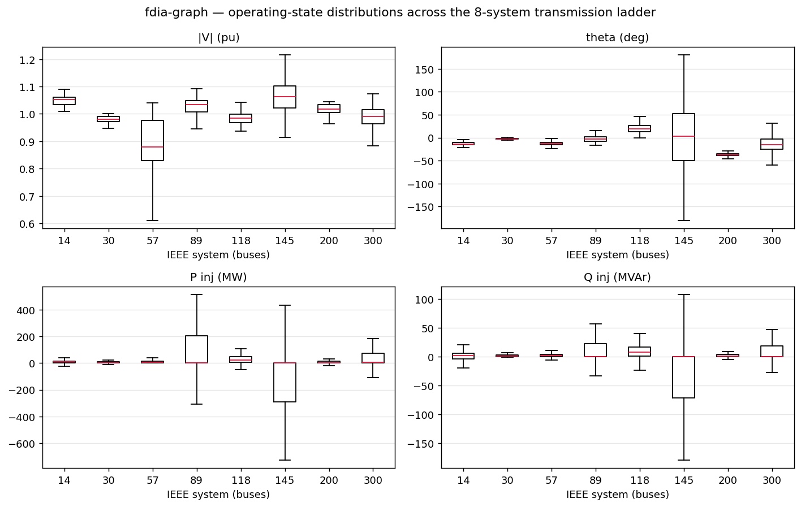

Examples and dataset statistics¶
Runnable model examples, the temporal state-estimation recipe, and per-system statistics.
Quickstart is in ../../README.md, field definitions in DATA_DICTIONARY.md.
The timeline as sequences (LSTM / TGN)¶
Every system is one continuous timeline of 72,000 frames on the real NYISO load trajectory, about
half of them under attack as timed episodes. fg.load(name, order="time") keeps the frames in
order, and the view then slides windows and lists episodes; order="random" is the same frames as
a record table. Three aligned measurement layers come with every frame, for buses and for branches:
ts = fg.load("ieee118", split="train", order="time")
a = ts.to_numpy()
a["node_x"] # [T, N, 4] OBSERVED: attacked+noisy where attacked, benign+noisy elsewhere (the model input)
a["benign"] # the same meters with the ATTACK REMOVED (noise kept)
a["clean"] # NOISELESS, attack-free TRUE state (the SE target)
a["edge_x"], a["edge_benign"], a["edge_clean"] # [T, E, 2] the same three layers for branch flows
a["y"], a["family"], a["seq_id"] # per-frame labels, family, episode index (-1 benign)
ts.edge_index, ts.edge_attr # static graph; ts.to_numpy()["node_m"][0] the meter plan
Xw, yw = ts.windows(W=24, stride=12) # [n, 24, N, 4] windows + per-window labels
ep = ts.episodes # onset, length, family, buses of every episode in the view
On the metered channels:
| difference | is | exact for |
|---|---|---|
observed − benign |
the attack | every family (the observed scan is the benign draw plus the attack) |
benign − clean |
meter noise | all families |
Every frame draws its meter noise once, for the true scan; that scan is benign, and the observed
scan is benign plus the attack on the meters the attack moves (attack/node_tamper,
attack/edge_tamper). For Aq/At/Al/Am the attack is the local false state's change of the
noiseless readings, so observed − benign is that change exactly and zero elsewhere. clean is
always the exact SE target.
Recipe: a temporal state estimator (attacked window → clean V/θ)¶
Feed an LSTM/TGN windows of the attacked measurements and train it to recover the clean state.
import fdia_graph as fg
import numpy as np
ts = fg.load("ieee118", split="train", order="time")
W, stride = 24, 12
Xw, yw = ts.windows(W, stride) # Xw [n,W,N,4] attacked measurements, yw [n,N] attack label
Cw, _ = ts.windows(W, stride, layer="clean") # [n,W,N,4] the clean state, windowed the same way
# column order is [|V|, Pinj, Qinj, angle]; the SE target is clean |V| and angle:
target = Cw[..., [0, 3]] # [n,W,N,2] clean V and theta
# training loop (sketch):
# pred = model(Xw) # your LSTM/TGN: [n,W,N,2] estimated V, theta
# loss = mse(pred, target) # estimated state vs clean V/theta
Xwis the attacked, noisy input.targetis the clean V/θ it should reconstruct.- For a full SE measurement set, window
edge_xthe same way (ts.to_numpy(["edge_x"])) and feed node + edge together. That is exactly what a WLS/robust estimator consumes. - Line physics:
ts.edge_attr([E,8]),ts.ybus,ts.yf. - Custom timeline:
fg.generate(system, name, attacked_frac=0.5, families=[...], seed=...). - Temporal features compare each frame to the previous emitted frame, so a stealthy ramp stays a small per-step change while a spike reads as an abrupt jump.
Three runnable baselines¶
All three report DR / FA / F1, never raw accuracy. About 98% of bus-scans are clean, so an all-negative model scores 0.98 accuracy while detecting nothing.
- Thresholds are picked on the val split (best F1). Test is evaluated once at that threshold.
- Baseline 1 follows the papers' protocol: train on benign +
Aq+Ad, hold outAs/Arzero-shot, exclude the slow ramp, score macro-F1 over attackable buses. - Baselines 2 and 3 train on every family so the hard ones stay visible.
- Each trains in a few CPU minutes.
# shared helpers, used by all three examples
import torch
def pick_tau(logits, y):
"""Decision threshold with the best F1 on the VALIDATION split (never tune on test)."""
best, tau = 0.0, 0.0
for q in torch.linspace(0.80, 0.999, 60):
c = torch.quantile(logits, q)
p = logits > c
f1 = 2 * (p & y).sum() / (p.sum() + y.sum()).clamp(min=1)
if f1 > best: best, tau = float(f1), float(c)
return tau
def report(p, t):
dr = (p & t).sum() / t.sum(); fa = (p & ~t).sum() / (~t).sum()
prec = (p & t).sum() / p.sum().clamp(min=1)
print(f"DR {dr:.3f} FA {fa:.4f} F1 {2*prec*dr/(prec+dr):.3f}")
def macro_f1(p, t):
"""Per-bus F1 averaged over the attackable buses (the localization metric our papers report)."""
f1s = []
for b in range(t.shape[1]):
if not t[:, b].any(): continue
tp = (p[:, b] & t[:, b]).sum(); fp = (p[:, b] & ~t[:, b]).sum(); fn = (~p[:, b] & t[:, b]).sum()
pr = tp / max(tp + fp, 1); dr = tp / max(tp + fn, 1)
f1s.append(2 * pr * dr / max(pr + dr, 1e-12))
return sum(f1s) / len(f1s)
1. Per-bus MLP on the papers' 14-dim feature vector (the headline localizer)¶
Each bus is described by 14 numbers:
| features | count | why |
|---|---|---|
| standardized measurements | 4 | the readings |
| meter-availability mask | 4 | tells an unobserved channel from a genuine zero on this sparsely metered grid |
| local Kirchhoff power residual | 2 | injection minus incident metered flows. Partial where a branch is unmetered; the mask lets the model discount those |
temporal_delta |
2 | scan-to-scan change |
swing |
2 | windowed z-score of that change |
A 28k-parameter MLP under the published protocol localizes at 0.915 macro-F1 in about five CPU
minutes. Our tuned paper models reach 0.93–0.95 on the same protocol. Needs pip install "fdia-graph[torch]".
import numpy as np
import torch.nn as nn, torch.nn.functional as F
import fdia_graph as fg
torch.manual_seed(0)
FIELDS = ["node_x", "node_m", "edge_x", "temporal_delta", "swing", "y", "family"]
splits = {"train": fg.load("ieee118", split="train", families=[0, 1, 2]).export(FIELDS),
"val": fg.load("ieee118", split="val", families=[0, 1, 2]).export(FIELDS),
"test": fg.load("ieee118", split="test", families=[0, 1, 2, 3, 4]).export(FIELDS)}
ei = fg.load("ieee118", split="train").edge_index_np
N = splits["train"]["node_x"].shape[1]
def kcl(d):
"""Partial nodal power balance: injection minus incident metered branch flows (a true balance only
where all incident branches are metered; the meter-mask channels flag the rest)."""
r = np.array(d["node_x"][:, :, 1:3], np.float32) # start from [P_inj, Q_inj]
np.subtract.at(r, (slice(None), ei[0]), d["edge_x"]) # flows leaving the from-bus
np.add.at(r, (slice(None), ei[1]), d["edge_x"]) # arriving at the to-bus
return r
def feats(d, stats=None):
"""The papers' 14-dim per-bus vector: measurements(4) + meter mask(4) + KCL(2) + delta(2) + swing(2)."""
raw = np.concatenate([d["node_x"], kcl(d), d["temporal_delta"]], -1)
if stats is None: stats = (raw.mean((0, 1)), raw.std((0, 1)) + 1e-9) # train statistics only
z = (raw - stats[0]) / stats[1]
return np.concatenate([z, d["node_m"], d["swing"]], -1).astype(np.float32), stats
Ftr, st = feats(splits["train"])
X = {"train": torch.tensor(Ftr).reshape(-1, 14)}
for s in ("val", "test"): X[s] = torch.tensor(feats(splits[s], st)[0]).reshape(-1, 14)
Y = {s: torch.tensor(d["y"], dtype=torch.float32).reshape(-1) for s, d in splits.items()}
m = nn.Sequential(nn.Linear(14, 160), nn.ReLU(), nn.Dropout(0.1),
nn.Linear(160, 160), nn.ReLU(), nn.Dropout(0.1), nn.Linear(160, 1))
opt = torch.optim.AdamW(m.parameters(), 1e-3)
pw = (1 - Y["train"].mean()) / Y["train"].mean() # class weight from the TRAIN base rate
for step in range(12000):
j = torch.randint(0, len(X["train"]), (4096,))
opt.zero_grad()
F.binary_cross_entropy_with_logits(m(X["train"][j]).squeeze(-1), Y["train"][j], pos_weight=pw).backward(); opt.step()
m.eval()
with torch.no_grad():
lo = {s: torch.cat([m(X[s][i:i + 65536]).squeeze(-1) for i in range(0, len(X[s]), 65536)]) for s in ("val", "test")}
tau = pick_tau(lo["val"], Y["val"] > 0) # threshold tuned on VAL ...
p = (lo["test"] > tau).reshape(-1, N).numpy(); t = (Y["test"] > 0).reshape(-1, N).numpy()
print(f"localization macro-F1: {macro_f1(p, t):.3f}") # ... reported on TEST
report(torch.tensor(p.ravel()), torch.tensor(t.ravel()))
# localization macro-F1: 0.915
# DR 0.859 FA 0.0002 F1 0.916 (~5 min CPU)
Per-family test DR at that operating point (benign-bus FA 0.01%):
Ad |
Aq |
As (zero-shot) |
Ar (zero-shot) |
|---|---|---|---|
| 0.94 | 0.90 | 0.87 | 0.73 |
Adding the excluded families back drops the pooled all-family F1 to ~0.83, almost entirely because
the slow ramp At (DR ~0.10) evades the temporal feature by construction. That gap is the open
problem this dataset poses. The next two baselines keep it visible by training on every family.
2. Graph model: ARMAConv (PyTorch-Geometric), all families¶
format="pyg"yields readyDataobjects.swingrides along as a node attribute, the branch flows asedge_attr(aliasedge_x) with their mask asedge_mask, and the static[E,8]line physics asedge_phys(passg.edge_physasedge_attrto a layer that wants line parameters).preload=Truecaches the split in RAM so epochs take seconds instead of minutes.- Needs
pip install "fdia-graph[pyg]".
import torch, torch.nn.functional as F
from torch_geometric.nn import ARMAConv
import fdia_graph as fg
ds = {s: fg.load("ieee118", split=s, format="pyg", preload=True) for s in ("train", "val", "test")}
stats = fg.load("ieee118", split="train").export(["node_x"])["node_x"]
MU = torch.tensor(stats.mean((0, 1))); SD = torch.tensor(stats.std((0, 1)) + 1e-9)
class GNN(torch.nn.Module):
def __init__(self, c=6, h=32):
super().__init__(); self.a = ARMAConv(c, h); self.b = ARMAConv(h, 1)
def forward(self, g):
x = torch.cat([(g.x - MU) / SD, g.swing], -1) # measurements + the swing feature
return self.b(F.relu(self.a(x, g.edge_index)), g.edge_index).squeeze(-1)
net = GNN(); opt = torch.optim.Adam(net.parameters(), 1e-3); pw = torch.tensor(43.0)
for epoch in range(8):
for batch in ds["train"].loader(batch_size=64):
opt.zero_grad()
F.binary_cross_entropy_with_logits(net(batch), batch.y, pos_weight=pw).backward(); opt.step()
with torch.no_grad():
ev = {s: [(net(b), b.y > 0) for b in ds[s].loader(batch_size=256, shuffle=False)] for s in ("val", "test")}
lo = {s: torch.cat([x for x, _ in ev[s]]) for s in ev}; yy = {s: torch.cat([y for _, y in ev[s]]) for s in ev}
tau = pick_tau(lo["val"], yy["val"])
report(lo["test"] > tau, yy["test"])
# DR 0.455 FA 0.0009 F1 0.609 (~2.5 min CPU; val F1 is flat from epoch 1, saturated)
The honest reading: the graph model saturates below the per-bus MLP, and our papers see the same
with both reading the identical 14-dim input. Message passing smooths exactly the localized per-bus
signal swing carries. Beating the lightweight baseline with graph or physics information is a
research target, not a given.
3. Temporal model: a plain LSTM on the timeline¶
- The example builds its features in place from the raw measurements: train-normalized channels plus a per-window z-score.
- Inside a sustained attack episode the rolling window is already contaminated, so the anomaly
fades after onset; the file's
swingis computed against the previous frame at generation time. - Needs
pip install "fdia-graph[torch]".
import torch, torch.nn as nn, torch.nn.functional as F
import fdia_graph as fg
def seqs(split): # one sequence per bus from the file's chronological split, as tensors
X, y = fg.load("ieee118", split=split, order="time").windows(W=16, stride=8, label="last", per_bus=True)
return torch.as_tensor(X), torch.as_tensor(y, dtype=torch.float32)
(Xtr, ytr), (Xva, yva), (Xte, yte) = seqs("train"), seqs("val"), seqs("test")
mu = Xtr.mean((0, 1)); sd = Xtr.std((0, 1)) + 1e-9
def feats(X): # measurements (train-normalized) + per-window z-score (the temporal spike feature)
return torch.cat([(X - mu) / sd, (X - X.mean(1, keepdim=True)) / (X.std(1, keepdim=True) + 1e-6)], -1)
Xtr, Xva, Xte = feats(Xtr), feats(Xva), feats(Xte)
class LSTMDet(nn.Module):
def __init__(self, c=8, h=32):
super().__init__(); self.lstm = nn.LSTM(c, h, batch_first=True); self.fc = nn.Linear(h, 1)
def forward(self, x): return self.fc(self.lstm(x)[0][:, -1]).squeeze(-1)
m = LSTMDet(); opt = torch.optim.Adam(m.parameters(), 1e-3)
pw = (1 - ytr.mean()) / ytr.mean()
for epoch in range(10):
for i in range(0, len(Xtr), 256):
opt.zero_grad()
F.binary_cross_entropy_with_logits(m(Xtr[i:i + 256]), ytr[i:i + 256], pos_weight=pw).backward(); opt.step()
with torch.no_grad():
lova = torch.cat([m(Xva[i:i + 4096]) for i in range(0, len(Xva), 4096)])
lote = torch.cat([m(Xte[i:i + 4096]) for i in range(0, len(Xte), 4096)])
tau = pick_tau(lova, yva > 0)
report(lote > tau, yte > 0)
# DR 0.372 FA 0.0055 F1 0.463 (~3.5 min CPU; val F1 0.39 -> 0.47 from 5 to 10 epochs, headroom left)
These are minutes-of-CPU baselines with deliberate headroom, not the dataset's ceiling.
layer="benign"/"clean" on windows, torch_windows and pyg_stream swaps the model input
layer (the label stays the attack target).
Dataset statistics¶
Per-system size. One timeline of 72,000 frames per system, about half under attack, split chronologically 60/20/20 by frame with no episode cut (so the split sizes differ slightly per system):
| system | N buses | E branches | frames | train | val | test | episodes |
|---|---|---|---|---|---|---|---|
| ieee14 | 14 | 20 | 72,000 | 43,200 | 14,400 | 14,400 | 15,997 |
| ieee30 | 30 | 41 | 72,000 | 43,200 | 14,400 | 14,400 | 15,974 |
| ieee57 | 57 | 80 | 72,000 | 43,218 | 14,382 | 14,400 | 15,948 |
| ieee89 | 89 | 210 | 72,000 | 43,200 | 14,400 | 14,400 | 16,028 |
| ieee118 | 118 | 186 | 72,000 | 43,200 | 14,400 | 14,400 | 16,080 |
| ieee145 | 145 | 453 | 72,000 | 43,200 | 14,400 | 14,400 | 16,192 |
| ieee200 | 200 | 245 | 72,000 | 43,226 | 14,374 | 14,400 | 16,163 |
| ieee300 | 300 | 411 | 72,000 | 43,200 | 14,400 | 14,400 | 16,333 |
Every system converges at every frame; a split boundary moves to the end of the episode it would cut.
Attacks per split (ieee118 shown; every system uses the same recipe). Families are scheduled by inverse episode length so each gets about the same share of attacked frames; episodes land where the scheduler puts them, so a partition can hold a few more of one family:
| family | train | val | test | total |
|---|---|---|---|---|
| benign (0) | 21,405 | 7,516 | 7,079 | 36,000 |
Aq stealthy load-scale |
3,189 | 871 | 1,014 | 5,074 |
Ad meter corruption |
3,136 | 1,069 | 1,026 | 5,231 |
As meter scaling |
3,120 | 1,092 | 1,029 | 5,241 |
Ar replay |
2,955 | 1,051 | 1,020 | 5,026 |
At temporal ramp |
3,300 | 1,200 | 1,140 | 5,640 |
Al load redistribution |
2,675 | 821 | 952 | 4,448 |
Am multi-snapshot |
3,420 | 780 | 1,140 | 5,340 |
The v0.7.2 release shipped a record shard and a separate stream per system; from v0.8.0 the
timeline is the one file, and fg.load(..., release="v0.7.2") still reads the shards.
Operating-state distributions (from the 72k pool per system):
| system | |V| p1 / med / p99 (pu) | θ min / med / max (deg) |
|---|---|---|
| ieee14 | 1.010 / 1.052 / 1.090 | −21 / −14 / 0 |
| ieee30 | 0.956 / 0.980 / 1.000 | −6 / −2 / 3 |
| ieee57 | 0.689 / 0.880 / 1.040 | −34 / −13 / 0 |
| ieee89 | 0.961 / 1.034 / 1.084 | −17 / −3 / 33 |
| ieee118 | 0.943 / 0.984 / 1.050 | −1 / 20 / 46 |
| ieee145 | 0.920 / 1.064 / 1.155 | −180 / 1 / 180 |
| ieee200 | 0.980 / 1.018 / 1.040 | −46 / −37 / −22 |
| ieee300 | 0.870 / 0.992 / 1.065 | −108 / −15 / 71 |

Per-bus |V|, θ, and P/Q injection distributions across the ladder (box = IQR, red = median; data in
../figures/fig_dataset_stats.csv). Two systems are outliers by construction of the MATPOWER base
case, not our generation: case57 runs chronically low-voltage (33 of 57 buses below 0.9 pu even
unscaled) and case145 has a very wide angle spread. Both are valid converged operating points.